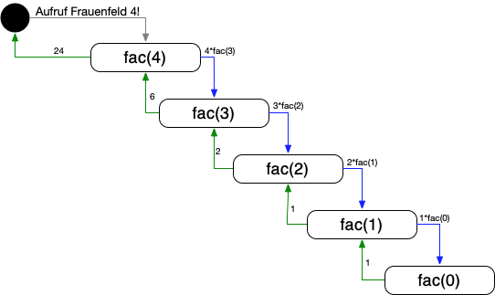

{% extends "../_base_template.html" %}
{% block title %}Lektion 9 - Iteration, Rekursion{% endblock %}

{% block sections %}
<section data-markdown >
<textarea data-template>
<i class="fas fa-graduation-cap"></i> Lektion 9 - Iteration, Rekursion
=============================

Ziele:

* Sie können die rekursive Programmform beschreiben und ihren Nutzen (und Probleme) benennen
* Sie können rekursive und iterative Programmformen unterscheiden
* Sie können einfache, definierte Probleme in rekursiver Form umsetzen
</textarea>
</section>

<section data-markdown >
<textarea data-template>
<i class="fas fa-graduation-cap"></i> Iteration
=============================

Den Begriff **Iteration** kennen Sie. Erklären Sie ihn im Zusammenhang der Informatik!

<div class="fragment">
    <blockquote>
        <p>
            Iteration (von lateinisch iterare ,wiederholen‘) beschreibt allgemein einen Prozess mehrfachen Wiederholens gleicher oder ähnlicher Handlungen zur Annäherung an eine Lösung oder ein bestimmtes Ziel.
        </p>
    </blockquote>
</div>
<div class="fragment">
    <p><i class="far fa-hand-point-right"></i>Wir reden hier also von **wiederholter Anwendung derselben Funktion**, oder Schleife.</p>
    <p>Beispiel:</p>
    <pre><code>
        int summe(int[] zahlen){
            sum = 0;
            for (int i = 0; i < zahlen.length; i++) {
                sum += zahlen[i];
            }
            return sum;
        }
    </code></pre>
</div>

</textarea>
</section>

<section data-markdown >
<textarea data-template>
<i class="fas fa-graduation-cap"></i> Rekursion
=============================

Rekursion in der Informatik bedeutet:

> eine definierte Funktion ruft zur Problemlösung sich selber wieder auf.

<i class="far fa-hand-point-right"></i> Auf welche Probleme stossen wir als Programmierer da, wenn wir nicht aufpassen?
</textarea>
</section>

<section data-markdown >
<textarea data-template>
<i class="fas fa-graduation-cap"></i> Rekursion
=============================

Rekursion in der Informatik bedeutet:

> eine definierte Funktion ruft zur Problemlösung sich selber wieder auf.

<i class="far fa-hand-point-right"></i> Auf welche Probleme stossen wir als Programmierer da, wenn wir nicht aufpassen?

**Wichtig**: Sie brauchen eine gute Abbruchbedingung, ansonsten ruft sich die Funktion theoretisch bis in alle Ewigkeit auf.

**Beispiel**:

schlechte / falsche Abbruchbedingung:
```java
int log2(float input) {
    if (input / 2 == 1) {
        return 1;
    } else {
        return log2(input / 2) + 1;
    }
}
input(16); // OK, Antwort: 4
input(18); // Oops! läuft ewig, resp. Stack Overflow!
```

Besser (wenn auch falsch):
```java
int log2(float input) {
    if (input / 2 > 1) {
        return log2(input / 2) + 1;
    } else {
        return 1;
    }
}
input(16); // OK, Antwort: 4
input(18); // OK, hört auf (wenn auch falsche Antwort)
```
</textarea>
</section>

<section data-markdown >
<textarea data-template>
<i class="fas fa-graduation-cap"></i> Rekursion
=============================

Wo wird Rekursion angewendet? Warum?

**Wann**

* bei funktionalen Programmiersprachen ohne iterative Mittel obligatorisch
* eleganter und "einfacher" Code erwünscht (z.B. bei kompizierten Datenstrukturen, Bäumen)
* gute, präzise Abbruchbedingung ist möglich

**Wann nicht**

* Speicher- und Recheneffizienz ist notwendig
* "unmathematische" Algorithmen - grosse Funktionen. Diese werden durch Rekursion sehr schnell sehr kompliziert.

**Wieso nicht?**

* Durch wiederholten Funktionsaufruf muss der Prozessor immer wieder ein "Context Switch" durchführen - Funktionsaufrufe
  sind Speicher- und Rechenintensiv.
</textarea>
</section>

<section data-markdown >
<textarea data-template>
<i class="fas fa-graduation-cap"></i> Rekursion - Beispiel Fakultät (n!)
=============================

`4! = 4 * 3 * 2 * 1`

Allgemein:

`n! = f(n):`
* `(n > 0)! = n*(n - 1)!`
* `0! = 1`

Also:

```
4!             = 4 * 3!
4 * 3!         = 4 * 3 * 2!
4 * 3 * 2!     = 4 * 3 * 2 * 1!
4 * 3 * 2 * 1! = 4 * 3 * 2 * 1 * 0! = 4 *3 * 2 * 1 (da 0! = 1 )
```

</textarea>
</section>

<section data-markdown >
<textarea data-template>
<i class="fas fa-graduation-cap"></i> Rekursion - Beispiel Fakultät (n!)
=============================

**Was passiert dabei im Speicher?**

Unten ist der "Call Stack" symbolisiert - also die Stufen der Funktionsaufrufe und Zwischenergebnisse.

```
Ziel: 4!
Also: 4! = 4*3!
* ... 3! = 3*2!
    * ... 2! = 2*1!
        * ... 1! = 1*0!
            ... Das wissen wir! 0! ist per Definition 1.
        * 1! ist also 1*1 = 1
    * 2! ist also 2*1*1 = 2
* 3! ist also 3*2*1*1

--> 4! ist also 4*3*2*1*1 = 24
```



</textarea>
</section>

<section data-markdown >
<textarea data-template>
<i class="fas fa-graduation-cap"></i> Rekursion - Beispiel Fakultät (n!)
=============================

**Rekursive Umsetzung in Java**

Implementieren Sie die Fakultäts-Funktion in Java:

```java
int fac(int n) {
    if (n == 0) {
        return 1;
    } else {
        return n*(fac(n-1));
    }
}
```

Mit der Startzahl 4 würde der Computer somit ausrechnen:

`4*(3*(2*(1*fac(0))));`

<i class="far fa-hand-point-right"></i> Schauen wir uns den Stack Trace in Eclipse an! (Praxis)

* Wir benützen den Debugger, um Schritt für Schritt den Algorithmus durchzugehen
* So sehen Sie "live", was auf dem Stack passiert.
</textarea>
</section>

<section data-markdown >
<textarea data-template>
<i class="fas fa-graduation-cap"></i> Rekursion - Beispiel Fakultät (n!)
=============================

**Iterative Umsetzung in Java**

Wir können ein rekursives Problem **immer** auch iterativ lösen. Versuchen Sie dies anhand der
Fakultäts-Funktion:

Kurze Übung für Zwischendurch: Implementieren Sie `int fac(int n)` in Java als ITERATIVE Variante!

</textarea>
</section>

<section data-markdown >
<textarea data-template>
<i class="fas fa-graduation-cap"></i> Rekursion - Beispiel Fakultät (n!)
=============================

**Iterative Umsetzung in Java**

Kurze Übung für Zwischendurch: Implementieren Sie `int fac(int n)` in Java als ITERATIVE Variante!

```java
int fac(int n) {
    int ergebnis = 1;
    for (int i = 1; i <= n; i++) {
        ergebnis = ergebnis * i;
    }
    return ergebnis;
}
```
</textarea>
</section>

<section data-markdown >
<textarea data-template>
<i class="fas fa-graduation-cap"></i> Rekursion - Zusammenfassung
=============================

Folgende Fakten sind gegeben:

* Methoden können sowohl interativ ALS AUCH rekursiv umgesetzt werden.
* Rekursion ist für uns schwieriger zu verstehen
* Jede iterative Lösung lässt sich auch rekursiv lösen - und umgekehrt.

**Iteration**

* Durch Schleifen (for, while) gelöst
* Abbruchbedingungen beenden die Schleifen
* Ergebnis wird schrittweise pro Schleifendurchgang erarbeitet
* typischerweise performanter

**Rekursion**

* Methode ruft sich immer wieder selber auf
* Abbruchbedingung beendet die Rekursion
* Ergebnis basiert auf rekursiv ermitteltem Teilergebnis
* Es lässt sich vieles eleganter lösen (= weniger Quellcode)
* Speicherintensiver, da Funktionsaufrufe im Stack zwischengespeichert werden
</textarea>
</section>


<section data-markdown >
<textarea data-template>
<i class="fas fa-flask"></i> Rekursion - Anwendung - Maze Solver!
=============================

**Maze Solver!**

Auf Moodle finden Sie ein Java-Programm, welches einen Lösungsalgorithmus für einen Irrgarten aufzeigt (MazeSolver.zip).
Das Programm löst ein Irrgarten:

```
██████████████████E█
█ █     ███   ████ █
█   █████████ ██   █
███ █       █ █  ███
█   █ █ ███ █ █ ████
█ █████ ███   █ █  █
█   ██   ████ █ █ ██
█ ██ █ █ ██ █ █    █
█      █    █   ██ █
████ ███████████████
```

**Aufgaben**

1. Schauen Sie sich das Programm, im Speziellen die Funktion `solve()` an. Verstehen Sie, was da passiert?
2. Beantworten Sie folgende Fragen:
   * Ist dies ein **Greedy Algorithmus**, ein **Backtracking Algorithmus**, oder eine Anwendung von **Divide and Conquer**?
   * Ist dies ein rekursiver oder iterativer Algorithmus?
   * Welche Komplexität weist dieser Algorithmus auf?
3. Verändern Sie das Labyrinth:
   * Was passiert, wenn Sie den Start auf das "innere" des Irrgartens verlegen? (siehe main(), Zeile 150, ms.solve() definiert den Start )
   * Kriegen Sie "unlösbare" Irrgärten hin?
   * Erstellen Sie ein eigenes Labyrinth. Ziel:** Zeigen Sie, dass der Algorithmus NICHT die beste Lösung findet!**
</textarea>
</section>

<section data-markdown >
<textarea data-template>
<i class="fas fa-flask"></i> Rekursion - weitere Aufgaben
=============================

Weitere Aufgaben zum Thema Rekursion finden Sie auf Moodle!
</textarea>
</section>
{% endblock %}
